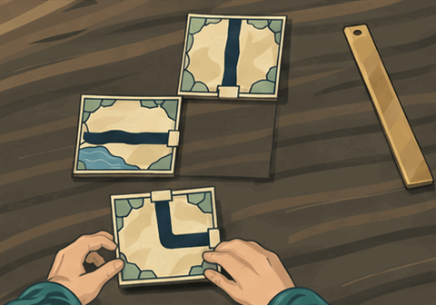

A room faces the wrong way. A quarter turn changes the route. Candidate fiction; no runtime artwork or accepted canon.

Native GIF · 64 frames · 19.2 seconds. Visible generation cuts remain. No true pause or seek controls; use the reference link for a still.
Open joined GIF · Reference still · Compare · Brief/provenance